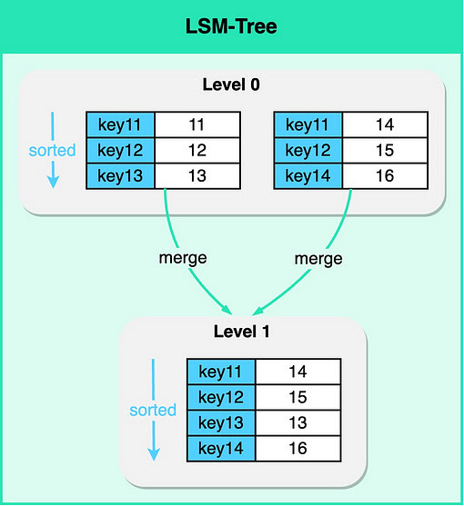

No SQL Database Indexing
Table of Contents
- YT: https://www.youtube.com/watch?v=I6jB0nM9SKU
- Blog: https://blog.bytebytego.com/p/database-indexing-strategies-part
1. LSM Tree (Log-Structured Merge-Tree)
A popular data structure used in some types of NoSQL databases, notably key-value and wide-column stores, is the Log-Structured Merge-tree (LSM Tree).
- Unlike traditional B-Tree-based index structures, LSM Trees are optimized for write-intensive workloads, making them ideal for applications where the rate of data ingestion is high.
- MemTable and SSTable for Fast Writes: An LSM Tree is, in itself, a type of index. It maintains data in separate structures, each of which is a sorted tree-based index. The smaller structure resides in memory (known as a MemTable), while the larger one is stored on disk (called SSTables). Write operations are first made in the MemTable. When the MemTable reaches a certain size, its content is flushed to disk as an SSTable.
- As data comes in, it's quickly written in Memory (as a balanced binary tree)
- When MemTable reaches a threshold it is sorted and flushed to disk as an immutable SSTable (Sorted-String Table)
- Updates to existing key doesn't override existing table, instead it is written to the next SSTable
- There is a periodic merging and compacting operation for SSTable
- Bloom Filters and Parition Indexes for Fast Reads: While the read path is more complex due to data being spread across different structures, the LSM Tree employs techniques such as Bloom Filters and Partition Indexes to locate the required data rapidly.
- Reading/Finding a key requires searching at each level (first MemTable, then level0 SSTable, level1 SSTable, …)
- So, an in memory Summary Table is usually maintained
- Also, bloom filters are used. Bloom Filter are memory efficient data strucutre that return "Firm NO" if data doesn't exist or a "may-be yes" if it may exist

Figure 1: LSM-Tree
1.1. Secondary Index for LSM Tree-based Databases
Secondary Index keys are values of field and values are primary keys
A secondary index, as the name suggests, is an index that is created on a field other than the primary key field.
Creating a secondary index in an LSM Tree-based database involves creating a new LSM Tree, where the keys are the values of the field on which the index is created, and the values are the primary keys of the corresponding records.
2. Use case
2.1. Point Lookup
The simplest use case for an index is to speed up searches on a specific attribute or key
2.2. Range Lookup
Indexes can also be used to efficiently retrieve a range of value.
2.3. Prefix Search
Indexes are also useful for prefix searches, thanks to their sorted nature. Imagine a scenario where a search engine keeps a table of previously searched terms and their corresponding popularity scores.
2.4. Geo-Location Lookup
To find all the points within a certain radius of a location, we only need to search for points that share a geohash prefix with the target location. This is a lot faster than calculating the distance to every point in the database